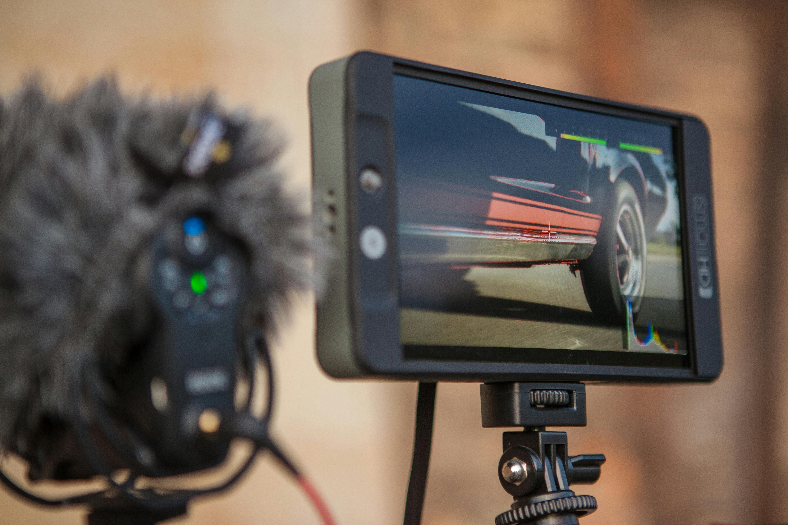

The most important and flexible way to get clips is to record them yourself. As a student, you already have a treasure chest of potential scenes: campus life, classroom moments, travel, friends hanging out, workouts, study sessions, or even your phone screen for tutorials. Almost every modern smartphone has a decent camera, so you should treat it like a mini‑cinema camera. Aim to record more than you think you need. For example, if you are planning a 60‑second Reel, shoot 3–4 times the amount of raw footage. This gives you options in the timeline so you are not stuck with one boring angle. Before you record, decide on an approximate style: vertical (9:16 for Shorts/Reels) or horizontal (16:9 for YouTube or school projects). Keep your phone steady when possible, either by holding it with both hands, resting it on a table, or using a simple mini‑tripod if you have one. If the camera struggles in low light, turn on the brightest light you can find or adjust the exposure by tapping the screen and pulling the brightness slider. Another useful habit is to record B‑roll: extra shots that are not necessarily part of the main story but can be cut under dialogue or action. For example, hands writing notes, people walking on campus, traffic outside the window, or your laptop screen while you work. These clips make your edits look more dynamic and professional even if the main camera is simple. Finally, keep a small “idea folder” somewhere on your phone (like a folder in Google Drive, OneDrive, or a simple camera folder) where you dump all raw clips together. That way, you can easily drag them into your mobile editor later.

Use free stock footage and free‑to‑use sites
Not every scene can be shot on your phone. Sometimes you need city timelapses, drone shots, nature footage, or office interiors that you simply cannot film yourself. That’s where stock footage and free‑to‑use video libraries come in. Many sites offer free clips that you can legally use in your edits, especially as long as you follow their license rules (usually “free for personal and commercial use with attribution” or “no attribution required”). Popular free or freemium options include sites like Pixabay, Pexels, and Videvo, which let you search for clips by keyword, resolution, and orientation (vertical or horizontal). You can download MP4 files directly and drop them into your mobile editor alongside your own footage. If you are editing on a phone, it helps to pre‑download these clips on your computer first, then transfer them to your phone via cloud storage (Google Drive, Dropbox, etc.) or a simple USB cable. Always check the license: avoid copyrighted movie scenes or TV shows unless you have explicit permission, because those can lead to copyright strikes or takedowns on social media. As a student editor, you can also use stock footage to fill gaps in your videos. For example, if you are making a study‑motivation reel and lack cinematic shots of sunrise or a busy library, you can pull one or two free clips to use as B‑roll under your voice‑over. This makes your video look more polished even if most of the content is simple screen‑recordings or selfie‑style shots. Over time, you can build your own “mini‑stock library” by saving useful free clips into a dedicated folder so you do not have to hunt for them every time you start a new project.